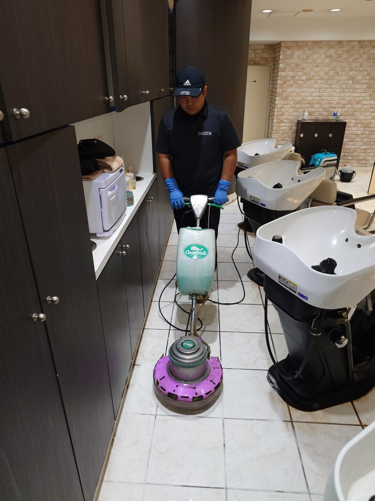
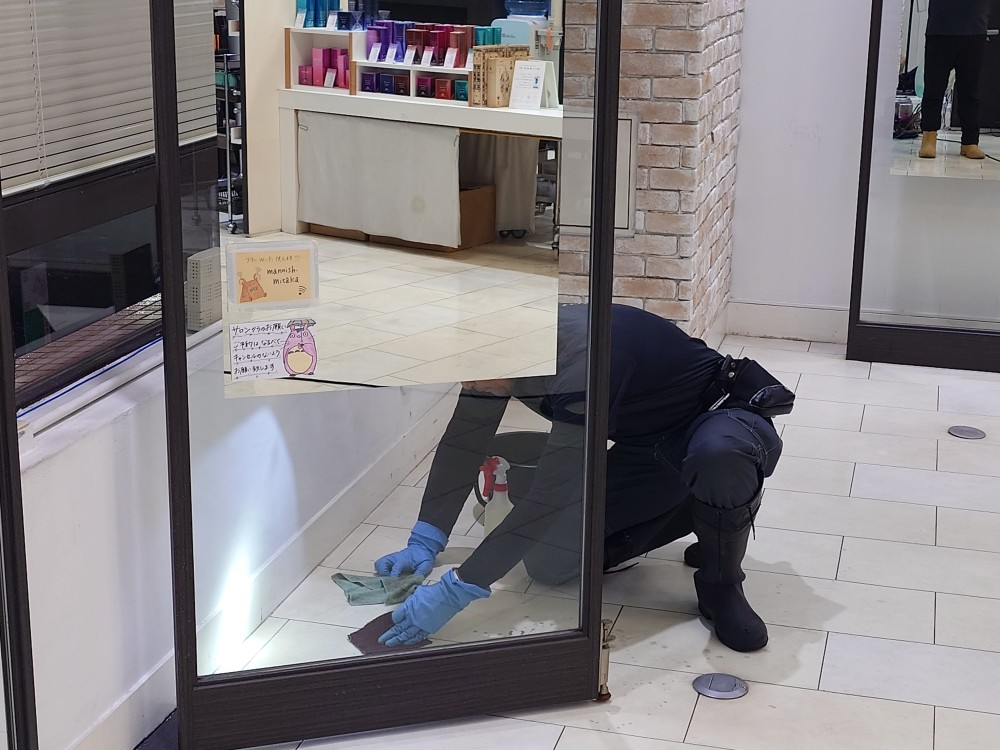
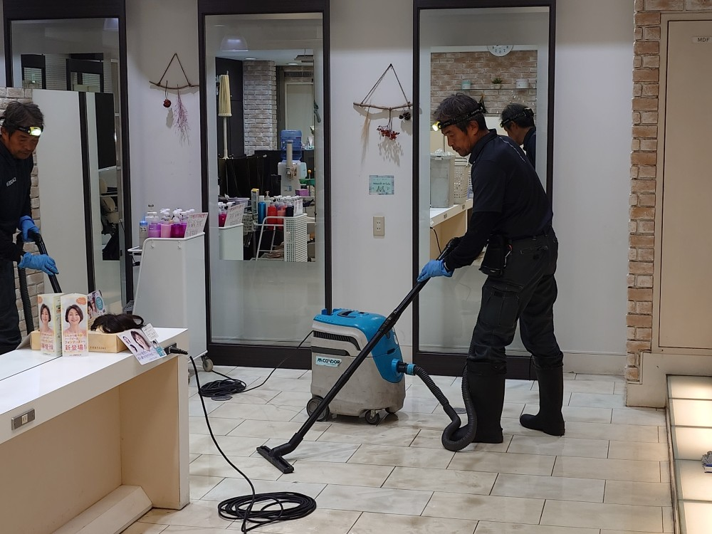
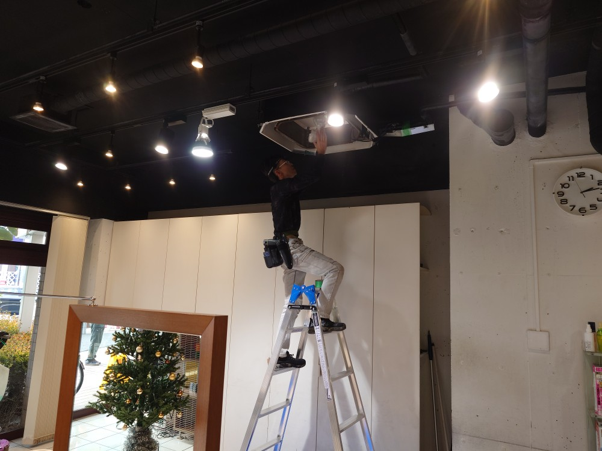
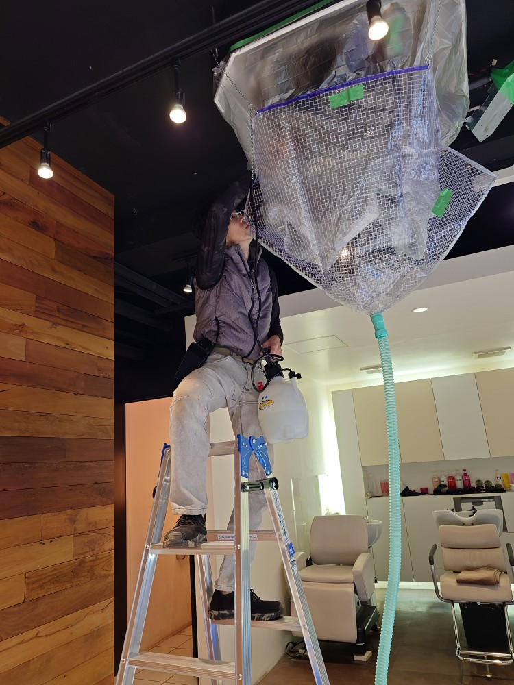
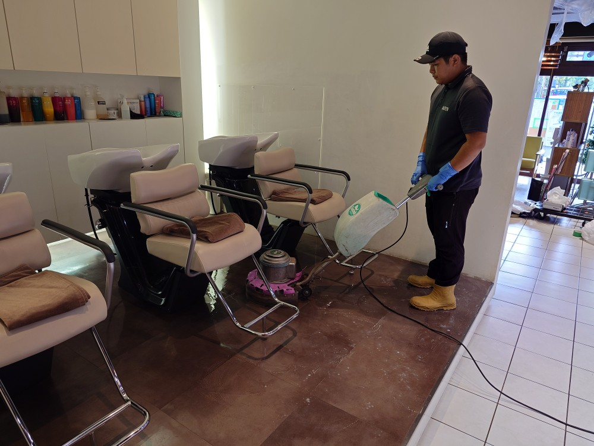
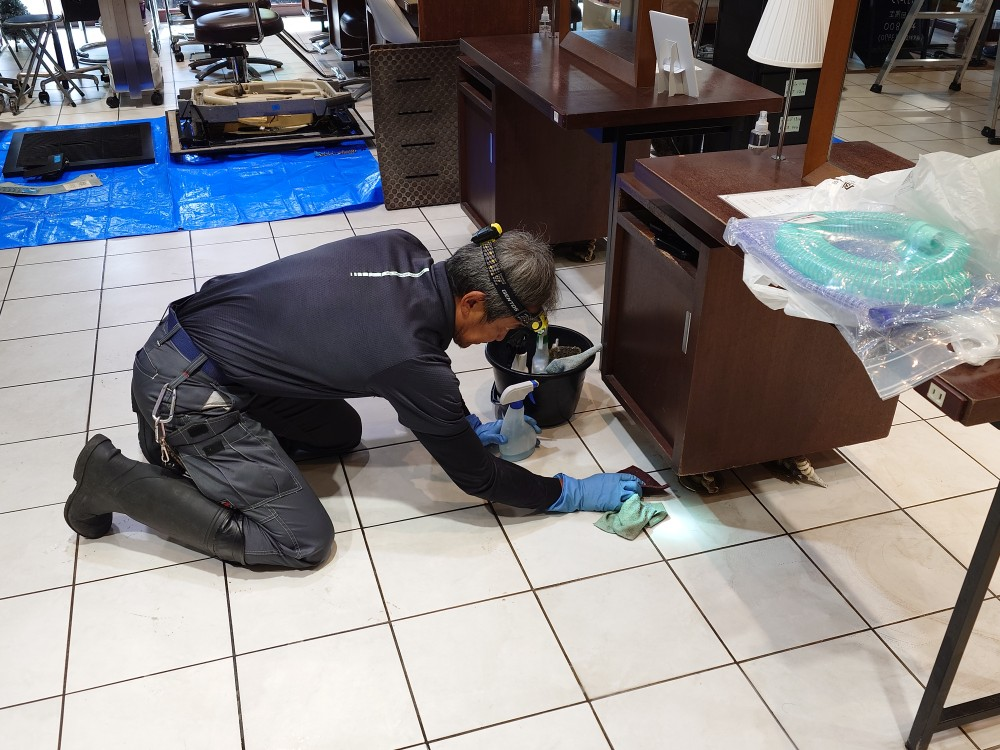
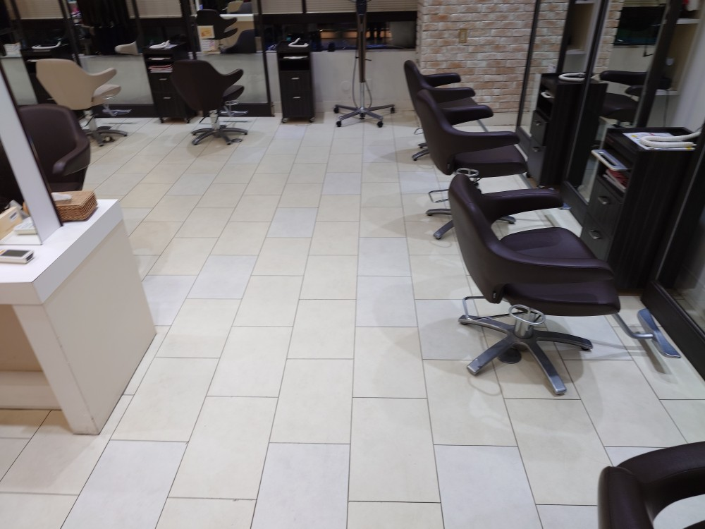

東京都三鷹駅前、美容室M様の2店舗フロアークリーニング、天カセエアコンクリーニングを美容室様の定休日にクリーニングしました!

三鷹駅前に2店舗ございます、美容室M様の定休日に、床面クリーニング、天カセエアコンクリーニングを実施しました!普段お客様で大人気の美容室M様の2店舗は、定休日の1日のみがクリーニング出来るチャンスなので、11月末の定休日に2店舗の床面、1店舗の天カセエアコンクリーニングを実施して、12月の最初の定休日に残りの天カセエアコンクリーニングを実施しました!普段の営業時間では、どうしてもスタッフさんでは除去しきれない床面の細かい汚れ、鏡面台の裏側の汚れ、お客様椅子の周りの細部の汚れ、バックヤードの隅の堆積汚れなどを、私どもDAIZENプロフェッショナルチームがスペシャルメソッドを駆使して丸1日掛けて隅々まで綺麗にしました!天カセエアコンも、普段の営業時間ではどうしても清掃が出来ない事から、たっぷりと汚水が採集出来てピカピカに綺麗にクリーニング出来ました!ぜひDAIZENメソッドを貴方様の店舗でもお試し下さい！






